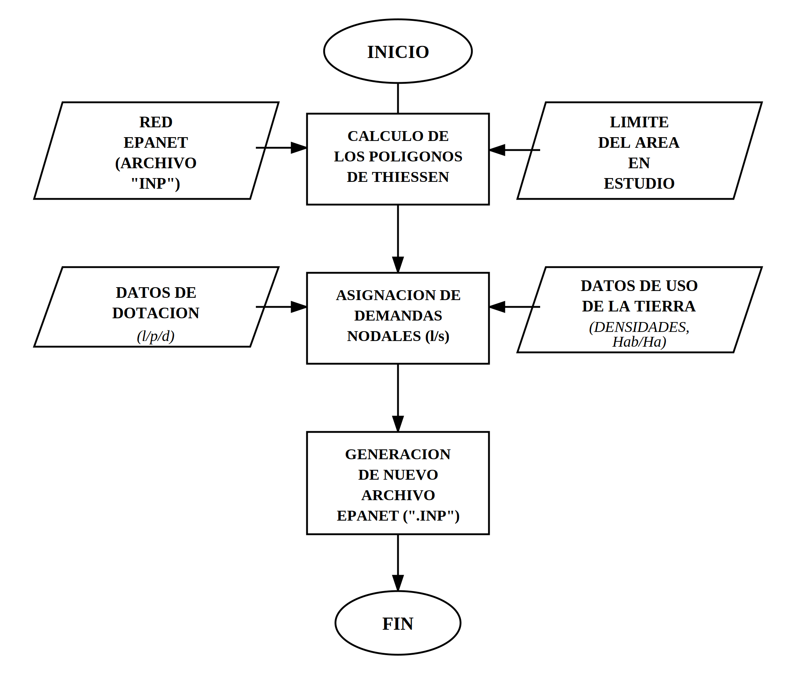
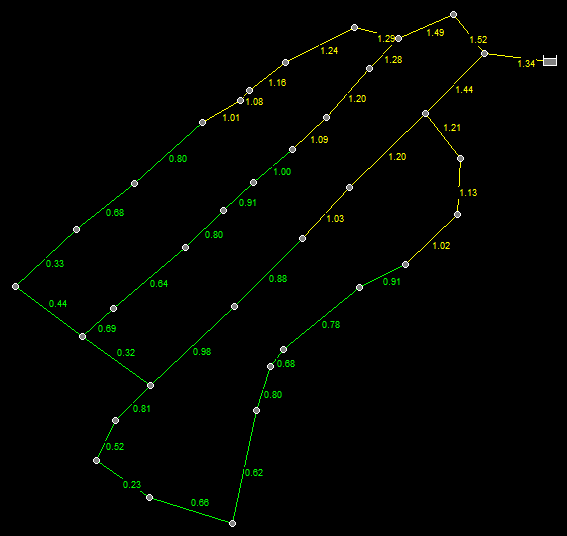
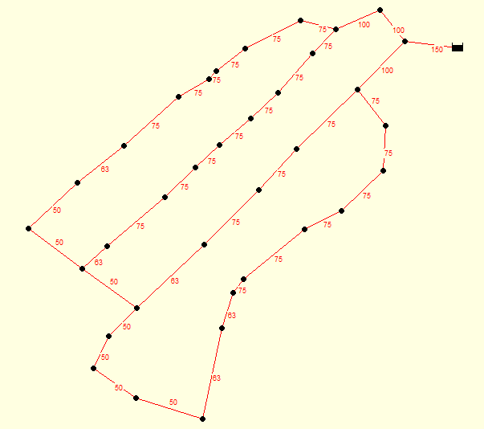
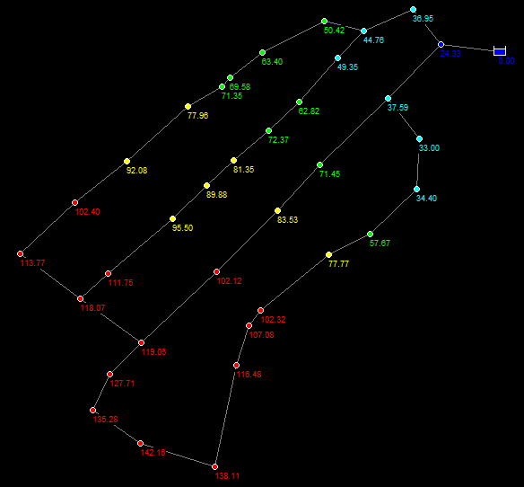

11. Redes de distribución#
11.1. Generalidades del modelo#
Con la finalidad de evaluar el comportamiento hidráulico del sistema de abastecimiento proyectado para la localidad de Cascas, se desarrolló la modelación de la red de distribución mediante el software EPANET V2.2. Esta herramienta permite simular, en régimen permanente, el comportamiento de las variables hidráulicas fundamentales de la red (caudales, velocidades y presiones) a partir de la topología del sistema, los diámetros comerciales asignados a cada tramo y las demandas asignadas en cada nodo de consumo.
11.2. Asignación de demandas nodales#
La asignación de las demandas a los nodos de consumo se realizó mediante el método de los Polígonos de Thiessen, el cual permite delimitar de manera objetiva el área de influencia correspondiente a cada nodo de la red, considerando la posición relativa de los demás nodos del sistema. Una vez delimitadas dichas áreas de influencia, la demanda asignada a cada nodo se determinó en función de la densidad poblacional (hab/ha) y la dotación de diseño establecida para el sector en estudio, mediante:
Donde \(q_i\) representa el factor de consumo correspondiente al área de uso (producto de la dotación y la densidad poblacional), \(A_i\) es la superficie del área de influencia del nodo y \(Q\) es la demanda total esperada para dicho nodo.
El procedimiento contempla, en primer lugar, el cálculo de los polígonos de Thiessen a partir de la red importada desde EPANET y del límite del área en estudio; en segundo lugar, la asignación de las demandas nodales a partir de los datos de dotación y de uso de la tierra (densidades, hab/ha); y, finalmente, la generación de un nuevo archivo de EPANET con las demandas ya incorporadas a cada nodo de consumo.

Figura 11.1. Diagrama de flujo para la asignación de demandas nodales.
11.3. Resultados de la simulación hidráulica#
Una vez incorporadas las demandas nodales al modelo y ejecutada la simulación en EPANET, se verificó el cumplimiento de los parámetros hidráulicos exigidos por la normativa vigente, específicamente en lo referido a velocidades de flujo, diámetros mínimos de tuberías principales y presiones estáticas máximas admisibles en la red.

Figura 11.2. Velocidades de flujo obtenidas en la simulación de la red en EPANET.

Figura 11.3. Diámetros de las tuberías en EPANET.

Figura 11.4. Presiones en los nodos de la red.
11.3.1. Velocidades de flujo#
La normativa OS.050 establece que la velocidad del flujo en las tuberías de la red de distribución debe mantenerse dentro de un rango comprendido entre 0.6 m/s y 3.0 m/s, con el propósito de evitar, por un lado, la sedimentación de partículas y el estancamiento del agua en tramos con velocidades excesivamente bajas, y, por otro, el desgaste prematuro de las tuberías, las pérdidas de carga excesivas y los fenómenos de golpe de ariete asociados a velocidades muy altas.
Los resultados de la simulación evidencian que, si bien la mayor parte de la red cumple con dicho rango normativo, existen tramos puntuales en los que la velocidad no alcanza el valor mínimo exigido. Esta situación puede atribuirse a las siguientes causas:
Bajo caudal de demanda: los tramos afectados corresponden, en su mayoría, a sectores con una menor cantidad de viviendas, lo que se traduce en caudales de diseño reducidos e insuficientes para generar velocidades dentro del rango normativo.
Tramos terminales o de borde: corresponden a ramales finales de la red, donde el caudal circulante es mínimo debido a que no existe continuidad de flujo hacia otros tramos aguas abajo.
Diámetros sobredimensionados respecto a la demanda real: en algunos casos, el diámetro comercial mínimo disponible resulta superior al estrictamente necesario para el caudal de diseño del tramo, lo cual reduce la velocidad por debajo del límite inferior.
Topología tipo malla cerrada: en los tramos que forman parte de circuitos cerrados, el caudal tiende a distribuirse entre rutas alternas, de modo que algunos tramos secundarios transportan únicamente un caudal de paso reducido.
11.3.2. Diámetros de tuberías#
De acuerdo con los resultados obtenidos, se determinó la necesidad de emplear, en algunos tramos de la red, un diámetro comercial de 50 mm, valor inferior al diámetro mínimo de 75 mm exigido por la normativa OS.050 para tuberías principales de un sistema de distribución de agua potable. Esta condición se origina principalmente por las siguientes razones:
Los tramos en los que se requirió un diámetro de 50 mm corresponden a sectores con una demanda hidráulica reducida, de modo que, desde un punto de vista estrictamente hidráulico, dicho diámetro resultaría suficiente para transportar el caudal requerido.
El diámetro mínimo de 75 mm exigido por la norma no responde únicamente a un criterio de capacidad hidráulica, sino también a consideraciones de seguridad operativa y contra incendios, así como a la necesidad de garantizar una sección mínima que facilite las labores de mantenimiento y limpieza y reduzca el riesgo de obstrucciones por sedimentos o incrustaciones a lo largo de la vida útil del sistema.
La diferencia entre el diámetro teóricamente requerido y el mínimo normativo evidencia que, en estos tramos, prevalece un criterio normativo de seguridad por encima del criterio hidráulico de diseño, lo cual constituye una limitación que debe corregirse en la propuesta final de diámetros comerciales.
En consecuencia, los tramos identificados con diámetro de 50 mm deberán ajustarse a un diámetro comercial mínimo de 75 mm, en cumplimiento estricto de la normativa, aun cuando ello implique sobredimensionar dichos tramos respecto a su requerimiento hidráulico estrictamente calculado.
11.3.3. Presión estática#
La normativa OS.050 establece que la presión estática máxima admisible en cualquier punto de la red no debe superar los 50 m de columna de agua (m.c.a.). Sin embargo, los resultados de la simulación muestran que, en el nodo de menor cota de toda la red, se registra una presión estática de 139.66 m, valor que supera ampliamente el límite normativo.
Esta condición se debe fundamentalmente al considerable desnivel topográfico existente entre el reservorio y el nodo más bajo de la red, propio de la configuración accidentada del terreno. Al tratarse de un sistema que opera íntegramente por gravedad, la energía potencial generada por dicho desnivel se traduce directamente en un incremento significativo de la presión estática en los puntos más bajos, superando los límites estructurales admisibles para las tuberías y accesorios convencionales. Esta situación obliga a plantear soluciones técnicas para disipar el exceso de carga estática:
Sectorización de la red en zonas de presión, de manera que cada sector opere de forma independiente dentro de un rango de presiones admisible, en función de su cota topográfica.
Instalación de Válvulas Reductoras de Presión (VRP) en los tramos o nodos críticos, que disipen el exceso de carga hidráulica antes de que el agua llegue a los sectores más bajos.
Implementación de cámaras o tanques rompecarga en puntos estratégicos del trazado, que rompan la línea piezométrica y reinicien la carga hidráulica disponible en el tramo subsiguiente.
11.4. Conclusiones parciales de la red#
A partir de los resultados obtenidos en la modelación hidráulica de la red de distribución, se concluye que el sistema cumple, de manera general, con los parámetros normativos exigidos en cuanto a velocidades de flujo, diámetros y presiones; no obstante, se identifican condiciones puntuales que requieren atención: tramos con velocidades por debajo del mínimo normativo asociados a sectores de baja demanda, tramos cuyo diámetro hidráulicamente requerido resulta inferior al mínimo normativo de 75 mm, y una presión estática en el nodo más bajo de la red que excede significativamente el límite de 50 m.c.a. permitido, como consecuencia directa del marcado desnivel topográfico del área de estudio.